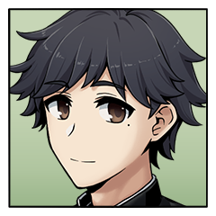

- 登場人物 -

安武 陸
就活中ハンター

赤木 叶恵
D7所属の接触者

敷村 修也
なりたてハンター

迷ノ宮 光葉
八角宗家のお嬢様

海野 標
陸の師匠

赤木 恵夢
叶恵の姉

灰葉 陽
修也の近所のお姉さん

迷ノ宮 御影
光葉の兄
プレイヤーキャラクター
PC1
安武 陸
（やすたけ りく）
【防御力】0 【行動力】0
幸福「海野標」《日常》強度1
──俺は世界に見捨てられた訳じゃない。
幸福「背徳：恩赦」《地位》強度1
──俺の罪は裁かれない。
PC2
赤木 叶恵
（あかぎ かなえ）
【防御力】0 【行動力】0
幸福「恵夢」《人脈》強度1
──危機感のない姉。
自分が守ってあげてる。
自分が守ってあげてる。
幸福「背徳：迷ノ宮御影」《地位》強度1
──世界からの評価は要らない。闇に潜り粛々と狩る者となろう。
……一番褒めて欲しい人に、認めて貰えている限りは。
……一番褒めて欲しい人に、認めて貰えている限りは。
PC3
敷村 修也
（しきむら しゅうや）
【防御力】1 【行動力】0
幸福「いままでの世界」《日常》強度1
──両親、友人。日常とのつながり。
幸福「背徳：灰葉 陽」《人脈》強度1
──もう記憶の中にしかない姿。
PC4
迷ノ宮 光葉
（まよいのみや みつは）
【防御力】1 【行動力】0
幸福「運命変転血戒『クロニック・ラヴ』の阻止」《日常》強度1
──運命を変えることは許されない。許されるべきではない。
幸福「背徳：迷ノ宮 御影」《人脈》強度1
──お兄様をお慕い申し上げる心。
ノンプレイヤーキャラクター
海野 標（うみの しるし）
陸の師匠。高校三年生。無所属のハンターであり、半吸血鬼。若くして実力を広く認められている。
灰葉陽の弟だったが、修也との交流は薄かったらしい。
赤木 恵夢（あかぎ めぐむ）
叶恵の姉。高校三年生。四年前に殺人事件に巻き込まれ、なんとか一命を取り留めた過去がある。
そんな過去を感じさせないような夢見がちで能天気な性格の持ち主。
ハロウィンの夜に色々あって、叶恵との密着度が増した。
灰葉 陽（はいば ひなた）
修也の近所に住んでいたお姉さん。四年前に殺されている。当時高校一年生。
彼女を殺したのはクイーン・オー・ランタンであったことが明らかになっている。
迷ノ宮 御影（まよいのみや みかげ）
光葉の兄。八角宗家の出だが、ウィッカーマン所属のハンターとして活動していた。
叶恵の師匠でもある。
昏睡状態であったが、光葉の願いにより目覚めた。